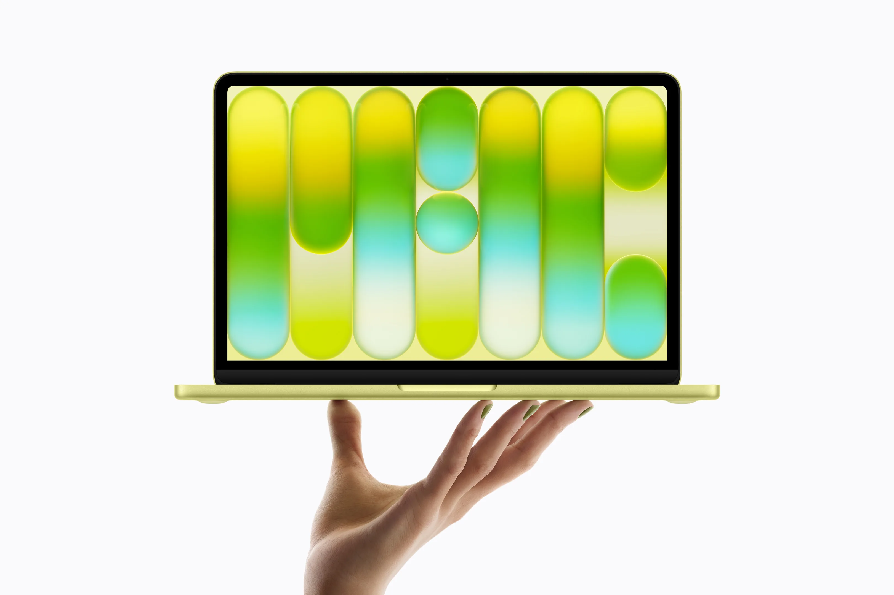
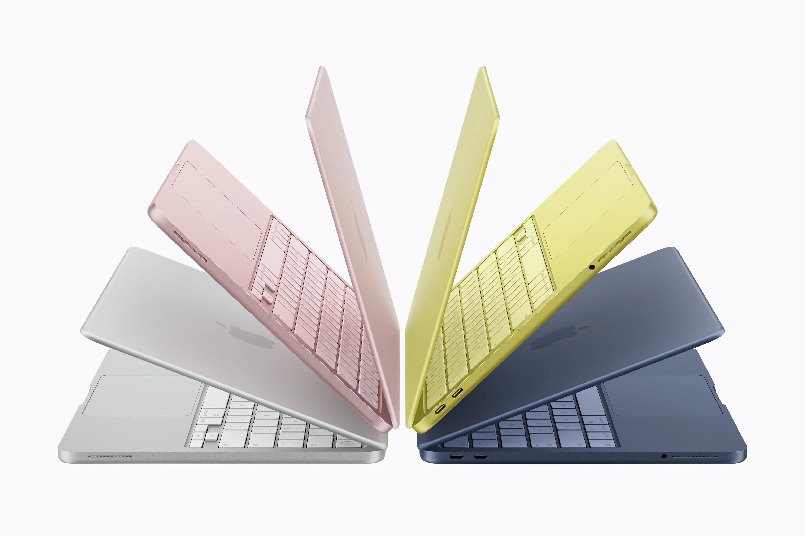
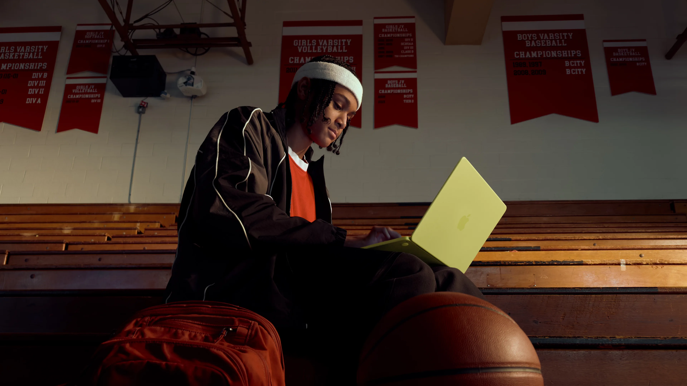

Okamžitě pracuje
Probuzení ze spánku za vteřinu, rychlé spouštění aplikací. Žádné čekání na aktualizace.
Otevřete víko a za 2 vteřiny učíte. Žádné instalování aktualizací uprostřed hodiny. Baterie na celý školní den. Spolehlivý provoz po celou dobu životnosti.

NOVÝ PRODUKT
MacBook Neo je úplně nový MacBook od Apple. Poprvé v historii nabízí kompletní Mac za cenu srovnatelnou s běžnými Windows notebooky.
Pro školy to znamená, že dostanou 13palcový Liquid Retina displej s rozlišením vyšším než u většiny PC v této ceně, čip A18 Pro, celodenní baterii a tichý provoz bez ventilátoru. To vše za cenu pro školy od 16 456 Kč.
Probuzení ze spánku za vteřinu, rychlé spouštění aplikací. Žádné čekání na aktualizace.
Celý školní den bez nabíječky. Ne slibovaných, ale skutečných.
Školy, které Mac používají, potvrzují stabilní výkon i po několika letech provozu.
Konstrukce bez ventilátoru. Žádné hučení při testech, natáčení nebo online výuce.
Snadno přenosný mezi třídami, na porady, domů.
Ruměná, indigo, stříbrná, citrusově žlutá.

ENGADGET
„MacBook Neo zahanbuje většinu Windows notebooků ve stejné cenové kategorii. Je až neuvěřitelné, že nepůsobí jako kompromis."
THE VERGE
„Testovali jsme mnohem dražší Windows notebooky, které dělaly kompromisy v kvalitě displeje, klávesnice nebo trackpadu. Neo žádnou zásadní slabinu nemá."
CNET
„Ideální první laptop pro studenty. Prémiový design a odolnost, na které jsme u Maců zvyklí, za nejnižší cenu v nabídce."
MACWORLD
„Perfektní vstupní brána do světa macOS. Dlouho platilo, že vstup do Macu byl drahý. S příchodem Neo je situace úplně jiná."
CNN
„Nejzajímavější technologický produkt, který jsme v posledních letech testovali."
PRO VEDENÍ ŠKOLY
272 učitelů z českých škol testovalo MacBook Air půl roku. Tohle zjistili.
Podívejte se na kompletní výsledky ankety →
Levnější notebooky ve školách často po několika letech zpomalují a vyžadují výměnu. Mac si zachovává výkon po celou dobu životnosti. ZŠ Česká Kamenice používá MacBooky od roku 2013 a stále s nimi pracuje.
S Macy se ve školách řeší méně problémů. Méně tiketů na helpdesk, méně servisních zásahů. IT správce se může věnovat rozvoji, ne hašení požárů. 173 z 272 učitelů v anketě neuvedlo žádné problémy s kompatibilitou.
MacBook Neo se spravuje přes Apple School Manager a Mosyle, stejně jako iPady. Nasazení aplikací, bezpečnostní politiky, nastavení celé flotily na dálku. Vše z jednoho místa.
Každý Mac má šifrování disku FileVault, antivirovou ochranu a automatické bezpečnostní aktualizace zdarma. Škola nemusí kupovat další bezpečnostní software.
CELKOVÉ NÁKLADY
Levnější notebooky ve školách často po několika letech zpomalují a vyžadují výměnu. Za 5 let tak škola často kupuje dva.
MacBook Neo si zachovává výkon po celou dobu životnosti. A po skončení životnosti ho škola může prodat za 40 až 50 procent původní ceny. Levný Windows notebook v tu chvíli nemá téměř žádnou hodnotu.
Přidejte k tomu méně servisních zásahů, méně času IT správce a bezplatné bezpečnostní aktualizace. Celkové náklady za 5 let vycházejí u Macu často nižší.
| Doporučujeme pro školy MacBook Neo | Levnější Windows notebook | |
|---|---|---|
| Pořizovací cena | od 16 456 Kč | přibližně 15 000 Kč |
| Typická životnost ve škole | 5 až 7 let | 2 až 4 roky |
| Nákupy za 5 let | 1 krát notebook | často 2 krát notebook |
| Přeprodejní hodnota | 40 až 50 procent ceny | minimální |
| IT zásahy | výrazně méně | častější |
| Bezpečnostní software | v ceně zařízení | často placený |
| Pro koho ve škole | Pro učitele a vedení, kteří chtějí spolehlivý notebook na 5 až 7 let | Pro situace, kde je hlavní co nejnižší pořizovací cena |
PŘECHOD NA MAC
68 procent učitelů z naší ankety nemělo s Macem žádnou předchozí zkušenost. Jednoduchost ovládání hodnotili průměrnou známkou 8,36 z 10.
Soubory máte ve složkách, internet v prohlížeči, poštu v Outlooku. Dock s aplikacemi dole, řádek nabídek nahoře. Nemáte se kde ztratit.
Microsoft 365 Word, Excel, PowerPoint, Outlook, Teams, Google Workspace Dokumenty, Tabulky, Prezentace, Classroom, Zoom, Canva, Bakaláři webová verze. Vaše oblíbené aplikace na Macu fungují.
Ctrl plus C je Command plus C. Ctrl plus V je Command plus V. Ctrl plus Z je Command plus Z. Většina zkratek, které znáte z Windows, funguje stejně. Místo klávesy Ctrl použijete Command s označením ⌘.
Pokud ovládáte iPhone, Mac vám bude povědomý. Gesta na trackpadu, oznámení, nastavení. Žádný registr, žádné ovladače, žádné složité nastavování.
Máte iPhone? Stačí ho mít poblíž a Mac si přenese nastavení, soubory, fotky a hesla automaticky. Přecházíte z Windows PC? Průvodce přenosem dat vás celým procesem provede.
Jako Apple Premium Education Partner nabízíme školení a podporu. Od prvního zapnutí až po plné nasazení ve výuce. Pomůžeme celé sborovně.
„Toto je má první zkušenost s MacBookem a oblíbila jsem si ho. Je lehoučký, snadno přenosný, rychlý, spolehlivý."

KOMPATIBILITA
Word, Excel, PowerPoint, Outlook a Teams na macOS fungují plnohodnotně. Učitelé pracují se stejnými soubory jako kolegové na Windows. Žádné problémy s formátováním.
Google Dokumenty, Tabulky, Prezentace, Classroom, Meet. Vše funguje v prohlížeči i v nativních aplikacích. Školy na Google Workspace nepocítí žádný rozdíl.
Webová verze Bakalářů funguje na macOS plně. Desktopová verze na macOS nativně neběží, ale učitelé používají webovou verzi bez omezení.
173 z 272 učitelů nemělo žádné problémy s kompatibilitou. Většina moderních školních tiskáren podporuje AirPrint, takže tisknete z Macu i iPadu bez instalace ovladačů. U starších modelů Konica, Ricoh, Sharp může být potřeba nastavit ovladače. Pro projektor nebo ethernet stačí běžný USB C hub. Pomůžeme s nastavením.
MacBook Neo se spravuje stejně jako iPady. Apple School Manager a Mosyle. Nastavení na dálku, nasazení aplikací, bezpečnostní politiky. Vše z jednoho místa.
„Správa přes Mosyle je jednoduchá. Vše nastavujeme na dálku."
PRO UČITELE
Připravili jsme praktického průvodce pro učitele, kteří přecházejí na Mac. Žádný marketing, jen konkrétní kroky. Od první minuty s Macem až po den, kdy se rozhodujete, jestli si ho nechat.
Součást projektu MacBook Neo pro učitele
Opravitelnost
Apple poprvé od roku 2012 navrhl MacBook tak, aby se daly opravit nebo vyměnit části, které se nejčastěji opotřebí. Především baterie.
Nezávislá organizace iFixit, která hodnotí opravitelnost elektroniky, ohodnotila MacBook Neo známkou 6 z 10. To je nejvíc, co MacBook za 14 let dostal.
Baterie je přišroubovaná osmnácti šrouby, ne přilepená lepidlem. Vyměníte ji a Mac jede dál.
USB-C porty jsou modulární. Když se opotřebí, nemusíte měnit celou základní desku.
Displej i klávesnice se dají vyměnit samostatně, bez nutnosti demontáže celého zařízení.
Co to znamená pro vaši školu
Když si Mac necháte, kupujete zařízení, které není odkázané na to, že po pěti letech půjde do koše. Vyměníte baterii a Mac jede dál další roky. To u žádného jiného Macu posledních 14 let neplatilo.
EKOSYSTÉM
Žák pošle práci z iPadu na Mac učitele za pár vteřin.
Z Macu vidíte obrazovky všech žákovských iPadů, otevřete jim aplikaci, zamknete displeje při výkladu.
Připravíte hodinu na Macu doma, ráno ji máte na iPadu ve třídě.
Začnete psát hodnocení na iPadu. Na Macu v kabinetu pokračujete, kde jste skončili.
SROVNÁNÍ
Tři MacBooky, tři rozpočty. Každý dává smysl v jiné situaci.
| Doporučujeme pro školy MacBook Neo Doporučujeme pro školy | MacBook Air M1 Ověřená klasika | MacBook Air M5 Maximální výkon | |
|---|---|---|---|
| Cena pro školy | od 16 456 Kč | Již se neprodává nový. Dostupný z druhé ruky. | od 27 290 Kč |
| Rychlost | Při běžné práci až o 50 procent rychlejší než nejprodávanější Windows notebook. Pro učitele více než dost. | Stále zvládá běžnou práci, web, Office, email. Méně rezerv do budoucna. | Nejvyšší výkon v lehkém notebooku. Pro náročnější práci, střih videa, větší projekty. |
| Displej | 13 palcový Liquid Retina, jas 500 nitů, miliarda barev. Vyšší jas a rozlišení než většina Windows PC v této ceně. | 13,3 palcový Retina, jas 400 nitů. Solidní, ale starší generace. | 13,6 palcový Liquid Retina, jas 500 nitů, P3 barevný prostor, True Tone. Nejlepší displej z trojice. |
| Baterie | Až 16 hodin přehrávání videa. Celý školní den bez nabíječky. | Až 15 hodin prohlížení webu. Celý školní den bez problémů. | Až 18 hodin. Nejdelší výdrž, plus rychlonabíjení. |
| Konstrukce | 1,23 kg. Nový hliníkový design ve čtyřech barvách. Tichý provoz bez ventilátoru. | 1,29 kg. Starší klínovitý design. | 1,23 kg. Moderní hranatý design ve čtyřech barvách. Tichý provoz bez ventilátoru. |
| Kamera a zvuk | 1080p FaceTime HD kamera, dva reproduktory. Dostatečné pro online výuku. | 720p kamera. Pro videohovory dnes slabší. | 12 Mpx Center Stage kamera, čtyři reproduktory, Dolby Atmos. |
| Pro koho ve škole | Školy, které chtějí nový, spolehlivý Mac za cenu srovnatelnou s Windows. Ideální pro učitele. | Školy, které hledají levný Mac z druhé ruky na základní práci. | Školy s větším rozpočtem, kde učitelé potřebují vyšší výkon. |
Pomůžeme vám vybrat správný model pro vaši školu. Konzultace je zdarma.
ZKUŠENOSTI ZE ŠKOL
272 učitelů z českých škol používalo MacBook Air půl roku ve výuce. Průměrná spokojenost 9,34 z 10.
PŘECHOD Z WINDOWS
„Toto je má první zkušenost s MacBookem a oblíbila jsem si ho. Je lehoučký, snadno přenosný, rychlý, spolehlivý."
SPOLEHLIVOST
„Určitě doporučuji. Mám hodně zkušeností a spolehlivost je 100 % oproti konkurenčním notebookům."
BATERIE
„Mac bez nabití vydrží klidně celý den práce."
PŘECHOD Z WINDOWS
„macOS mi celkově vyhovoval, byť jsem s ním nikdy nepracovala. Teď už bych neměnila."
KAŽDODENNÍ POUŽITÍ
„I přes počáteční nejistotu s odlišným ovládáním už po několika dnech raději sáhnu po Macu než po Windows."
MOBILITA
„Je to mazlík, stále se mnou, v kabelce, lehoučký, baterka nekonečná. Jsem z něj nadšená!"
Pošleme vám nezávaznou nabídku s cenami pro školství. Pomůžeme s výběrem konfigurace i se zavedením do provozu.
Navrhnout konfiguraci pro naši školu